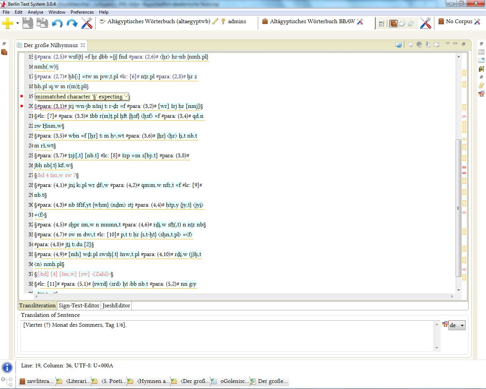

Das BTS ist in der Lage aufgrund einer Grammatik den Text der Transkription auf Fehler zu überprüfen. Das heißt nicht, dass es falsche Lemmata oder Transkriptionen erkennt oder korrigiert, sondern nur, dass in der Transkriptionslogik auftretende Fehler markiert werden:

Die Fehler sind durch einen rot umrandetes Rechteck am rechten Rand neben der Scrollleiste des Texteditors zu erkennen. Es gibt heller und dunkler rot umrandete Felder. Die helleren geben aber die Stelle eines Rubrums an (hier z.B: Z19 und Z37). Im Feld des Texteditors selbst sehen Sie rote Wellenlinien unter dem Grammatikfehler. Durch on-mouse-over beim links neben der fehlerhaften Textzeile erscheinenden roten Kästchen erfahren Sie den Grund des Fehlers:

In diesem Fall fehlt ein "-" vor dem durch "§" markierten Ende der Zeile. Wenn sie das Zeichen einfügen verschwindet die Fehlermeldung: